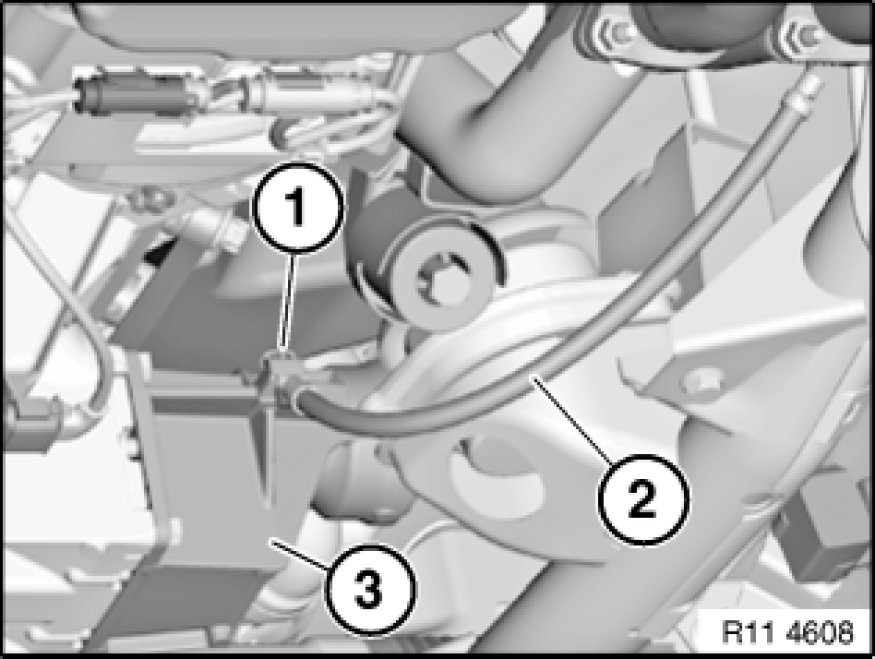
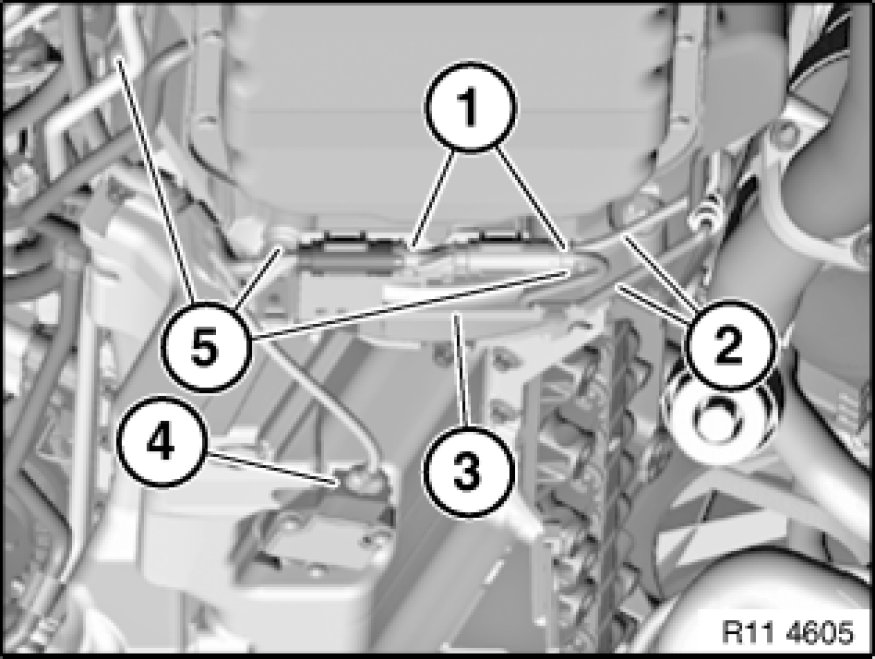
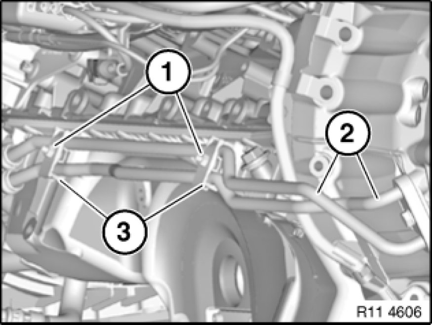
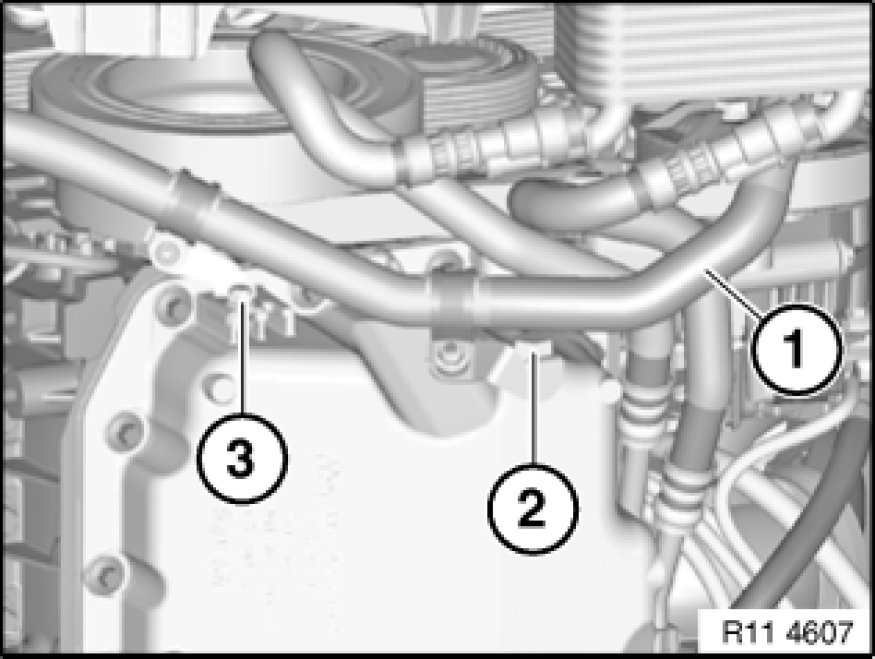
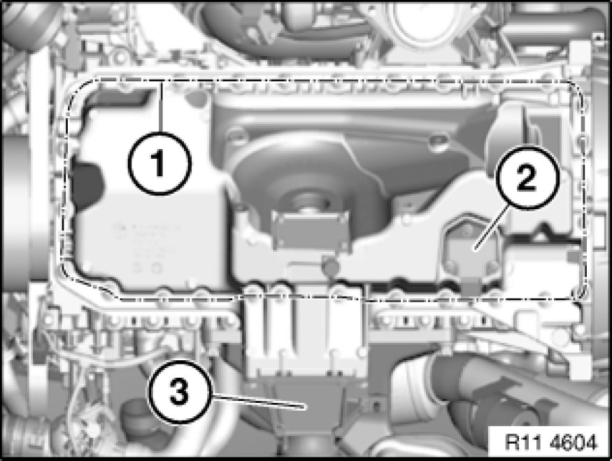

Oil Pan: Service and Repair
11 13 000 - Removing and installing, sealing or replacing oil sump (N52K) AWD

Important!
When working on the engine oil, coolant or fuel circuit, you must protect the alternator against contamination.
Risk of damage!
Cover alternator with suitable materials.
Failure to comply with this procedure may result in an alternator malfunction.
Important!
Aluminium-magnesium materials.
No steel screws/bolts may be used due to the threat of electrochemical corrosion.
A magnesium crankcase requires aluminium screws/bolts exclusively.
Aluminium screws/bolts must be replaced each time they are released.
Aluminium screws/bolts are permitted with and without
color coding (blue).
For reliable identification:
Aluminium screws/bolts are not magnetic.
Jointing torque and angle of rotation must be observed without fail (risk of damage).

Necessary preliminary tasks:
- Secure engine in installation position Securing Engine in Installation Position
- Lower front axle Lowering/Raising Front Axle Carrier
- Remove front differential Removing and Installing/Replacing Front Differential
- Drain and add engine oil Engine Oil

Release screw (1) from grounding cable (2) on right bearing block (3).
Lay grounding cable (2) to one side.

Note:
Graphic shows an E92 by way of example. There may be differences in detail on other model series.
Unclip electric leads (2) of monitor sensors from holder (3).
Disconnect plug connections (1) of monitor sensors and lay to one side.
Release bolts (5) on transmission.
Tightening torque 11 13 7AZ [1][2]11 13 Oil Pan.
Lay holder (3) to one side.
Disconnect plug connection (4) on oil level sensor.

For vehicles with optional extra SA205 (automatic transmission):
Unscrew nuts (1).
Tightening torque 11 13 8AZ [1][2]11 13 Oil Pan.
Release holder (3) with transmission oil cooler lines (2) from oil sump guides and place to one side.

For all vehicles:
Note:
For purposes of clarity, the graphic shows the front axle carrier and stabilizer bar removed.
Unscrew nut (3).
Tightening torque 11 13 9AZ [1][2]11 13 Oil Pan.
Release screw (2).
Tightening torque 11 13 10AZ [1][2]11 13 Oil Pan.
Release both holders with coolant hose (1) from oil sump guide.

Important!
Bolts of oil sump have different lengths.
Observe different tightening torques.
Release bolts along line (1).
Tightening torque 11 13 2 / 3 and 4AZ [1][2]11 13 Oil Pan.
Installation Note:
Replace aluminium screws.
If necessary, remove oil level sensor (2) and right bearing block (3).
Tightening torque 11 13 11AZ [1][2]11 13 Oil Pan.
Installation Note:
Replace sealing ring.
Important!
There must be no adhesive residues in the lower crankcase retaining threads.
Clean retaining threads and sealing faces.
Installation Note:
Replace all seals.

Assemble engine.